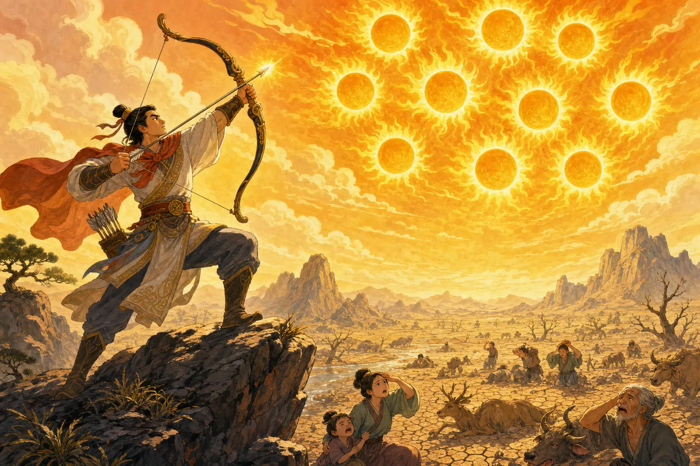
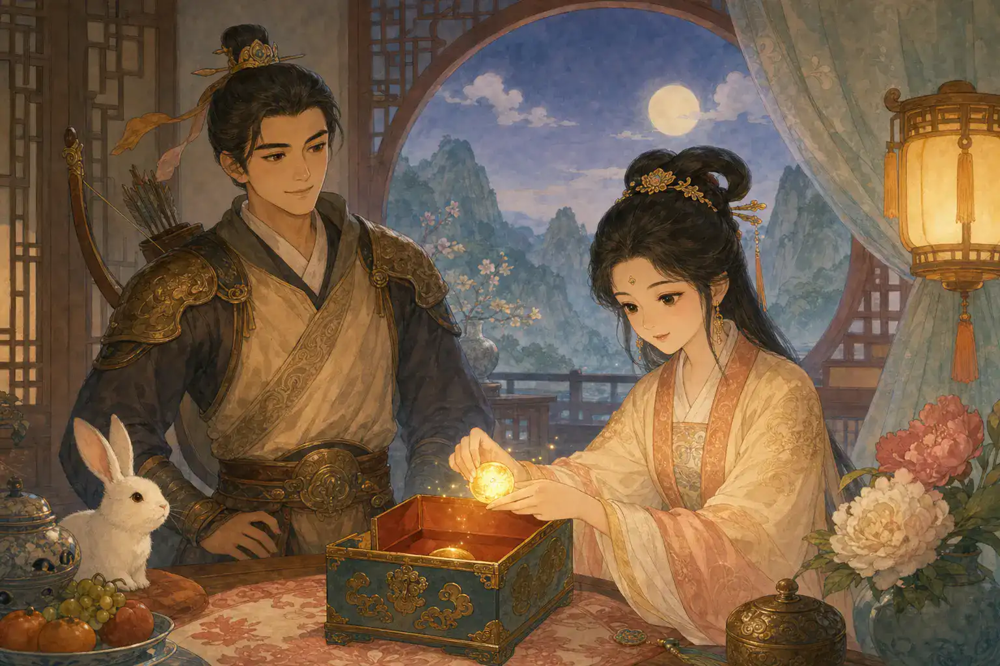
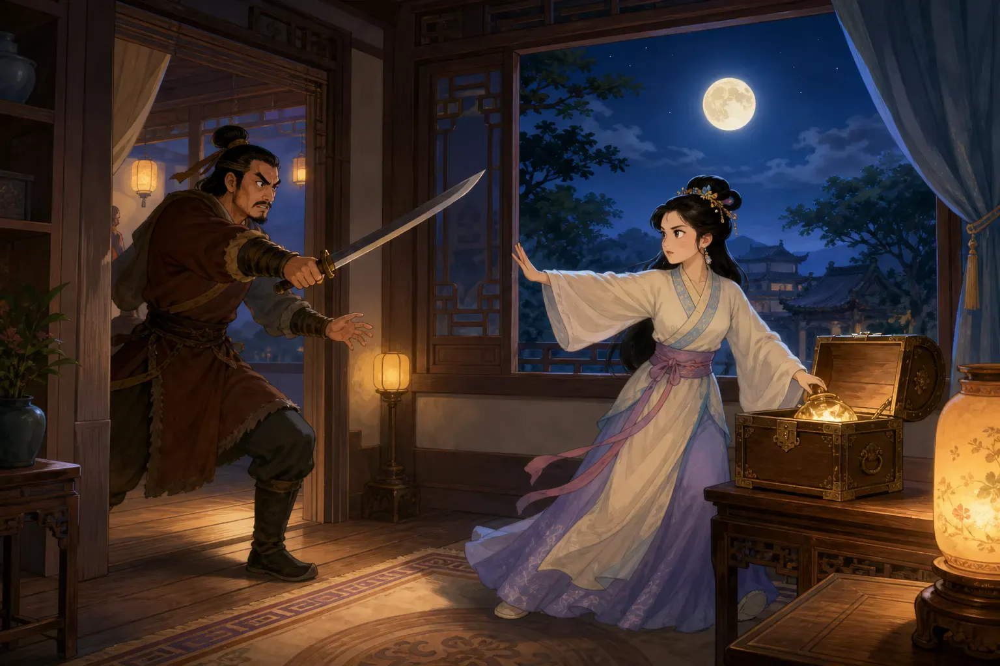
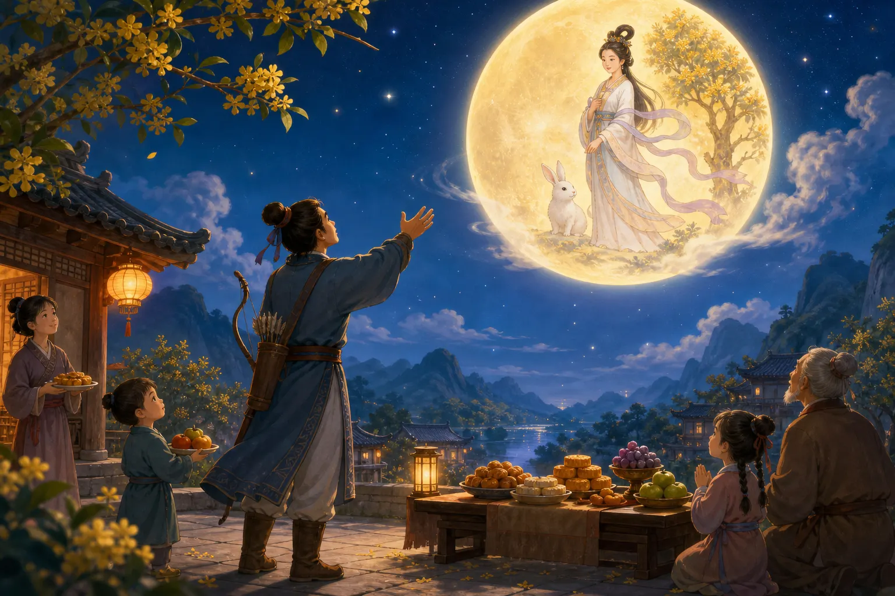

嫦娥奔月
Chang'e Flies to the Moon
Page 1
天空一下子多了九个太阳
The Day the Sky Had Nine Suns Too Many

Ten suns shrink the rivers and crack the ground. Hou Yi raises his bow because the world needs only one sun.
这个古老故事有许多讲法。下面这一种，是今天很多孩子听过的版本。
太阳原本应该轮流升上天空。可是有一天，十个太阳竟然一起出现了。树叶卷了起来，河水越变越浅，土地裂开一道道口子。人和动物躲来躲去，却怎么也躲不开热浪。
Hòu Yì · 神话中射下九个太阳的神射手。是一位非常厉害的弓箭手。他爬上高处，站稳双脚，拉开长弓。一支箭、两支箭、三支箭……九个太阳接连从天空落下。
后羿停下了。他把最后一个太阳留在天上，因为大地还需要光和温暖。风终于又吹过田野，人们也终于敢从阴影里走出来了。
This old tale has been told in many ways. Here is one of the best-known versions.
The suns were supposed to take turns crossing the sky. Then one day, all ten appeared at once. Leaves curled. Rivers shrank. Cracks opened across the fields. People and animals searched for shade, but there was nowhere cool to hide.
Hòu Yì · 后羿 · The legendary archer who shoots down nine suns. was a famous archer. He climbed to a high place, planted his feet, and pulled back his bow. One arrow flew, then another, then another. Nine suns fell from the sky.
Then Hou Yi stopped. The world still needed one sun for light and warmth. At last, a breeze moved across the fields, and people stepped out of the shadows.
Page 2
木盒里装着一颗不死药
The Magic Medicine in the Wooden Box

The medicine could make one person live forever. Hou Yi asks Chang'e to guard it because he does not want to leave her.
后羿射下九个太阳以后，西王母送给他一颗不死药。西王母是中国古代故事里一位很有力量的女神。谁吃下这颗药，谁就能永远活下去，离开人间成为仙人。
可是，永远活着也有一个很大的代价。后羿爱他的妻子Cháng'é · 中国神话中飞到月亮上的人物。，不愿意一个人飞走，把她留在地上。所以，他没有吃药。
后羿把仙药放进一个木盒，请嫦娥好好保管。嫦娥盖上盒盖，把它藏了起来。
可是，后羿的一名学生蓬蒙已经知道了仙药的秘密。他想要的不是一个普通人的一生。他想要永远活下去。
After Hou Yi shot down the nine suns, the Xīwángmǔ · 王母娘娘 · A powerful goddess who separates the Cowherd and Weaver Girl in the legend. gave him a magic medicine. She was a powerful goddess in old Chinese stories. Whoever swallowed the medicine would live forever and rise into the sky.
But the medicine could help only one person. Hou Yi loved his wife, Cháng'é · 嫦娥 · The woman who flies to the moon in a famous Chinese legend.. He did not want to fly away alone and leave her behind. So he did not take it.
Hou Yi placed it inside a wooden box and asked Chang'e to guard it. She closed the lid and hid the box away.
But one of Hou Yi's students knew their secret. His name was Peng Meng, and he wanted to live forever.
Page 3
蓬蒙伸手去抢木盒
Peng Meng Reaches for the Box

Peng Meng approaches the box with a sword. Chang'e stands in his way and must reach the medicine first.
一天，后羿离开了家。蓬蒙等到他走远，便拿着刀闯了进来。他径直走向藏着仙药的木盒，逼嫦娥把药交出来。
嫦娥挡在木盒前面。她打不过拿刀的蓬蒙，可是她也不能让他把仙药抢走。
蓬蒙向木盒伸出手。就在他快要碰到盒子时，嫦娥抢先取出仙药，一口吞了下去。
她的衣袖忽然飘了起来，双脚也慢慢离开地面。嫦娥保住了仙药，没有让蓬蒙抢走；可是仙药也正把她带离自己的家。
One day, Hou Yi left home. Peng Meng waited until he was gone, then burst inside with a sword. He went straight to the wooden box and demanded the medicine.
Chang'e stood between him and the box. She could not fight a man holding a sword, but she could not let him steal the medicine.
Peng Meng reached for the box. Before his hand touched it, Chang'e grabbed the medicine and swallowed it.
Her sleeves began to float. Her feet slowly lifted from the floor. Chang'e had kept the medicine away from Peng Meng, but now it was carrying her away from home.
Page 4
月亮看得见，却够不着
The Moon Is Bright—but Far Away

Hou Yi and his neighbors set fruit and cakes under the moon. In later tales, the Jade Rabbit keeps Chang'e company.
嫦娥飘出窗外，飞过屋顶，又穿过云层。她越升越高，最后来到了月亮上。这个版本的故事里，她再也不能回到地面。
后羿回家时，只看见打开的木盒，嫦娥却不见了。他跑到院子里。月亮又圆又亮，可是不管他怎样伸手，都碰不到它。
后羿把水果和饼摆在月光下，仿佛还能和嫦娥一起吃。乡亲们也来到院子里，陪他抬头望月。
今天，人们常在Zhōngqiū Jié · 农历八月十五赏月团聚的传统节日。讲这个故事。中秋节是农历八月十五，那一晚的月亮通常又圆又亮。家人会聚在一起赏月、吃月饼。后来的月宫故事还给嫦娥添了一位伙伴：一只在桂树下捣药的玉兔。
Chang'e floated through the window, over the rooftops, and past the clouds. Higher and higher she rose, until she reached the moon. In this version of the tale, she could never return to the ground.
When Hou Yi came home, he found the wooden box open and Chang'e gone. He ran outside. The moon was round and bright, but no matter how far he reached, he could not touch it.
Hou Yi set fruit and cakes in the moonlight, as if he could still share them with her. His neighbors came and looked up with him.
Today, people often tell this story during Zhōngqiū Jié · 中秋节 · The traditional festival of family reunion and moon viewing on the fifteenth day of the eighth lunar month., when families gather under the round autumn moon and share mooncakes. Later moon tales give Chang'e a companion too: the Jade Rabbit, who pounds magic medicine beneath a tree on the moon.
十个太阳，一轮月亮
Ten Suns, One Moon
这个故事从十个火辣辣的太阳开始，最后停在一轮清凉的月亮下。下次中秋节吃月饼或提灯笼时，不妨抬头看看：月亮上的影子，像不像一只正在捣药的兔子？
The tale begins with ten blazing suns and ends beneath one cool moon. The next time you carry a lantern or bite into a mooncake, look up. Do the moon's shadows look a little like a rabbit pounding medicine?